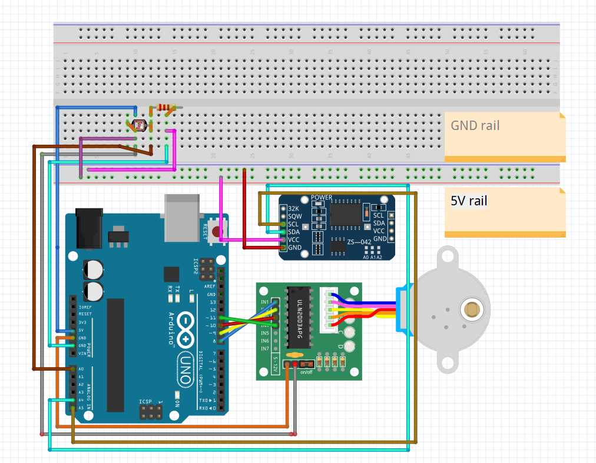
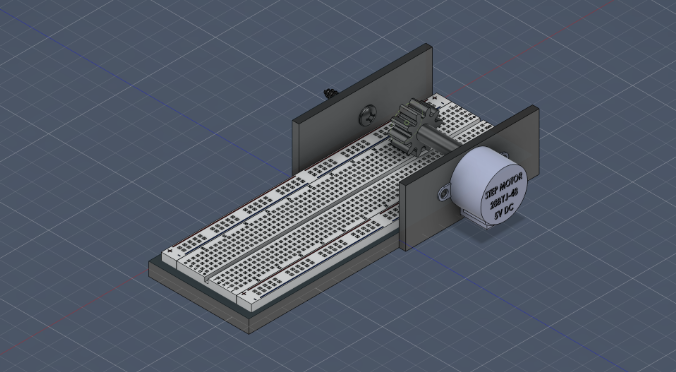
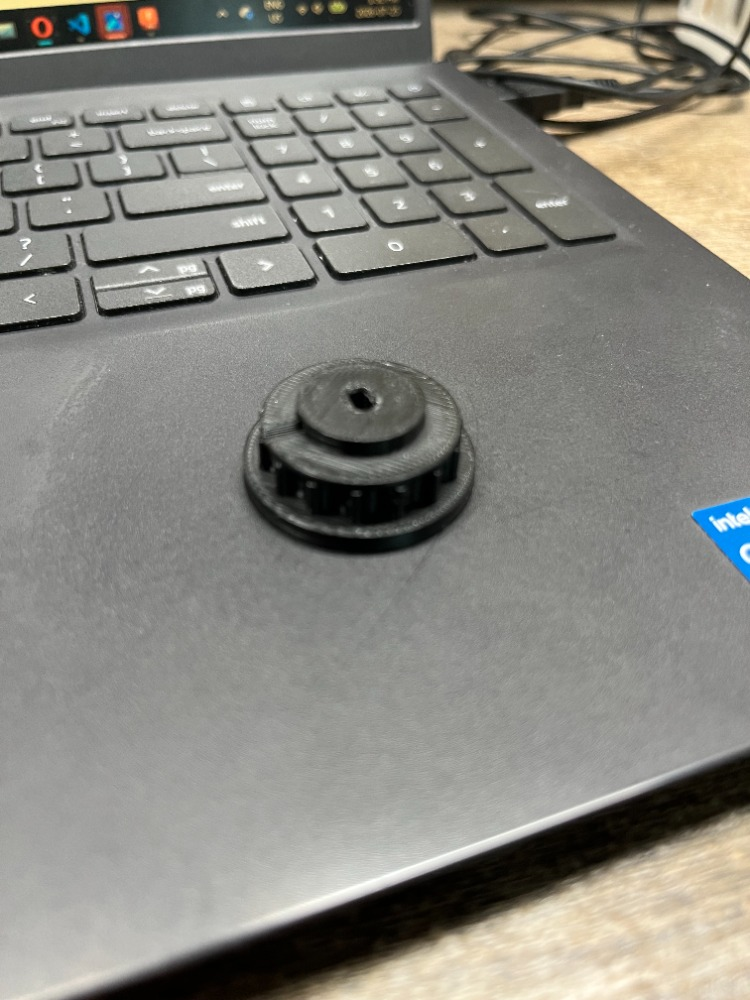

Circadian Rythm Optimizer ⯨
Published July 26, 2026
Overview
Recently, I have been on a journey toward improving my sleep schedule and overall health. During the school semester, I may have let my routines slip out of control a little too much, and considering that summer was right around the corner, I decided to utilize some "zeitgeber science".
While perusing the web, I discovered a consensus among health-focused sources about the benefits of early-morning sun exposure. I investigated the topic further and found many articles and meta-analyses pointing to potential benefits such as increased wakefulness in the mornings and higher-quality sleep later in the evening, influenced by several neurochemicals and hormones optimized during these studies.
I took it into my own hands to develop a mechanism that would automatically roll my blinds based on how much sunlight there was. I used an old Arduino kit to experiment with different systems of rotational motion, paired with a photoresistor and RTC module.
Schematic

Circuit layout using Fritzing software.

A rendered mockup in Fusion 360 of the case the electronics would sit in if I had access to a 3D printer.
Technical Components
- ELEGOO Arduino Uno R3
- 30 tie-points breadboard
- Photoresistor (photocell)
- RTC module
- ULN2003 stepper motor driver module
- 10 kΩ resistor
- Jumper wires
Difficulties
During this project, I documented my process of design and construction, specifically recording difficulties encountered that posed a challenge to the workflow. One considerable obstacle was finding the most optimal apparatus to translate the motor's rotational force to pull the cord.
I tested several strategies using rubber Lego wheels and tooth floss, respectively. These both failed because the rubber could not provide enough friction to make the cord spin, and the makeshift capstan could not grip the floss or convert torque. I decided to outsource a 3D-printed sprocket that would mesh with the spherical beads, doubling down on using a gear to transmit the motor's power.
Further testing showed that the stepper motor producing 34.3 mN·m of torque was insufficient to overcome the friction of the 3D sprocket and the blind clutch. I deduced that switching to the NEMA-17 motor, which produces approximately 40 to 60 N·cm of torque, would be sufficient in future iterations. Due to financial constraints, further testing has ground to a halt.
I would also like to point out that the teeth of the sprocket were not the issue, as the motor was able to pull the cord when slack.
Final Design

The makeshift design is duly noted; the most important factor in holding the apparatus in place is tension. Binding hockey tape in a way that restricts the motor and gear from moving was adequate for testing.

The 3D sprocket.
Code
View Code
#include <Wire.h>
#include <RTClib.h>
#include <Stepper.h>
#define STEPS 2048
Stepper motor(STEPS, 8, 10, 9, 11);
RTC_DS3231 rtc;
int openHour = 7;
int openMin = 30;
int closeHour = 21;
int closeMin = 0;
int lightThreshold = 600;
long stepsToOpen = 30000;
bool isOpen = false;
void openBlind() {
motor.step(stepsToOpen);
isOpen = true;
Serial.println("opened");
}
void closeBlind() {
motor.step(-stepsToOpen);
isOpen = false;
Serial.println("closed");
}
void setup() {
Serial.begin(9600);
motor.setSpeed(10);
Wire.begin();
rtc.begin();
}
void loop() {
DateTime now = rtc.now();
int light = analogRead(A0);
Serial.print(now.hour());
Serial.print(":");
if (now.minute() < 10) Serial.print("0");
Serial.print(now.minute());
Serial.print(" light: ");
Serial.println(light);
bool timeCondition = (now.hour() == openHour && now.minute() == openMin);
bool lightCondition = (light > lightThreshold && now.hour() >= 5 && now.hour() < 10);
if ((timeCondition || lightCondition) && !isOpen) {
openBlind();
}
if (now.hour() == closeHour && now.minute() == closeMin && isOpen) {
closeBlind();
}
delay(45000);
}Next Steps
Moving forward, an obvious goal is to have the apparatus properly running with sufficient power and torque. Future iterations could focus on tailoring a shelf or platform to securely fasten the motor and breadboard, which would improve the visual appeal and optimize power transmission through increased tension. By utilizing 3D printing services, I believe this goal is feasible and can be achieved in the foreseeable future.
Overall, I am not unfulfilled by the incompleteness. I believe this project introduced me to the "physical moat" of engineering and taught me how to deal with adversity and the importance of planning. It is with amicability that I conclude the "Circadian Rhythm Optimizer."